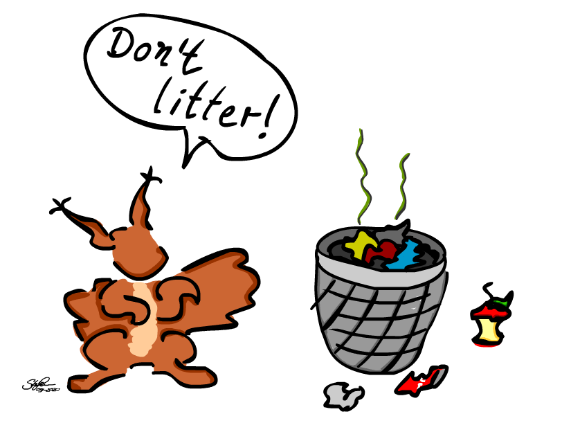
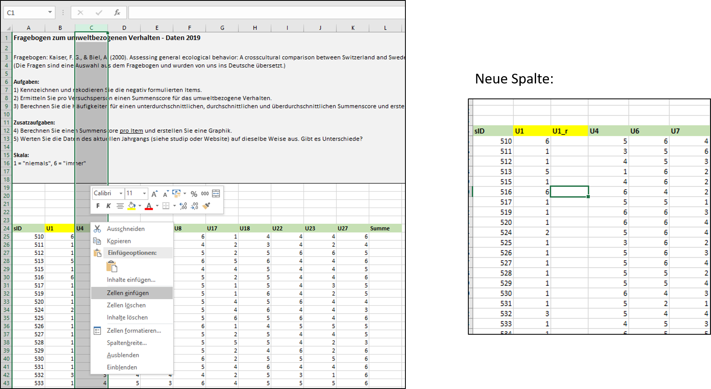

Sitzung 2: Umfragen und Experimente – Datenaufbereitung

Nachdem wir letzte Woche die Excel-Basics behandelt haben, schauen wir uns heute mal an, wie man sich mit Excel einen ersten Überblick über erhobene Daten verschaffen kann. Dabei lernen wir außerdem weitere hilfreiche Funktionen des Programms kennen.
Die Daten zum Auswerten kommen dabei teilweise von Ihnen selbst! Wir möchten Sie bitten, zwei kurze Fragebögen auszufüllen (in einem geht es um umweltbezogenes Verhalten, im anderen um Prokrastination) - das sollte insgesamt nicht länger als 5 Minuten dauern. Die Daten stellen wir dann zum Üben bereit, sobald sie erhoben sind. Die Teilnahme ist natürlich freiwillig und anonym!
Hier geht’s zur Umfrage! Gerne vor dem weiteren Lesen ausfüllen.
Da wir die gleichen Fragebögen bereits im letzten Jahrgang bearbeiten lassen haben, können wir mit diesen Daten anfangen. Dieselben Arbeitsschritte können Sie dann in ein paar Tagen an Ihren eigenen Jahrgangsdaten noch einmal eigenständig üben. Hier geht’s zu den 2019er-Daten und hier zu denen von 2020.
Bei allen Datensätzen handelt es sich um simple Umfragen und nicht um Experimente. Was unterscheidet eine Umfrage von einem Experiment? Mehr Infos dazu finden sie hier.
Das Vorgehen wird hier nur für den Umwelt-Fragebogen veranschaulicht. Die Auswertungsschritte für den Prokrastinations-Fragebogen sind weitgehend identisch und können der Musterlösung entnommen werden.
1 Der Datensatz
Der Umweltfragebogen besteht aus 10 Fragen (auch “Items” genannt). In unserem Datensatz bekommt jedes Item eine eigene Spalte und jede Zeile beinhaltet die Antworten einer anonymen Versuchsperson (also einer Person aus dem Quanti-Jahrgang 2019/20).
Rechts ist ersichtlich, welches Kürzel in den Spaltenüberschriften zu welcher Frage gehört.
In der Tabelle stehen die Antworten, die die Versuchspersonen auf die verschiedenen Fragen angekreuzt haben (auf der Skala von 1 - “nie” bis 6 - “immer”).

1.1 Items rekodieren
Beim Lesen der Fragen fällt auf, dass nicht alle Fragen “in dieselbe Richtung formuliert” sind. Bei manchen Fragen zeigt ein hoher Wert auf der Skala ein besonders umweltfreundliches Verhalten an, bei anderen Fragen zeigt er ein besonders umweltschädliches Verhalten an. Wir wollen alle Items zur Vereinfachung der Auswertung so umkodieren, dass ein hoher Wert für ein umweltfreundliches Verhalten steht. Welche Items müssen wir “umdrehen” und wie könnte das funktionieren?
Es bietet sich an, die Spalten mit den zu invertierenden Items zunächst einmal farblich zu kennzeichnen und rechts von ihnen eine neue, leere Spalte anzulegen. Diese zunächst leere Spalte kann dann später die invertierten Werte beinhalten. Um in Excel eine neue Spalte zwischen bestehende Spalten einzufügen, kann man einfach eine bestehende Spalte komplett auswählen (indem man oben auf den Buchstaben klickt, der sie kennzeichnet). Durch Rechtsklick auf den nun markierten Bereich erscheint ein Menü, hier “Zellen einfügen” auswählen. Links von der markierten Spalte erscheint eine leere Spalte.
Im untenstehenden Screenshot ist Item U1 gelb markiert, da es sich hierbei um eine Frage handelt, bei der ein hoher Wert ein umweltschädliches Verhalten anzeigt (Batterien in den Hausmüll werfen). Rechts von der Spalte, die U1 enthält, wird eine neue Spalte eingefügt. Wir nennen sie “U1_r”, weil hier die rekodierten Werte für U1 eingetragen werden sollen.

Wer mag, kann da zunächst selbst einmal überlegen, wie man das Item rekodieren könnte. Dafür brauchen wir keine gesonderte Excel-Funktion, sondern müssen uns nur eine einfache Rechnung überlegen. Diese sollte aus einem Wert von 1 in U1 eine 6 in U1_r machen. Eine 2 in U1 wird zur 5 in U1_r, eine 3 in U1 wird zur 4 in U1_r, eine 4 in U1 zur 3 in U1_r, eine 5 in U1 zur 2 in U1_r und eine 6 in U1 zur 1 in U1_r. Wem dazu nichts einfällt - siehe Lösung oder Lehrvideo.
Woher weiß man, welche Items man rekodieren muss? Zu einem Fragebogen gehört normalerweise ein Handbuch, in dem solche Informationen enthalten wären. In unserem Fall kann man es sich recht leicht inhaltlich erschließen oder einfach der Lösung entnehmen.
1.2 Summenscores bilden
Wenn die nötigen Items rekodiert wurden, kann man pro Person einen Summenscore bilden, der ihr umweltbezogenes Verhalten widerspiegelt. Nach dem Rekodieren bedeuten höhere Werte auf allen Items ein umweltfreundlicheres Verhalten. Je höher also die Summe aller Items einer Person zusammengenommen, desto umweltfreundlicher verhält sie sich - oder behauptet es zumindest im Fragebogen.
Wir haben gesehen, dass die Werte von jeder Versuchsperson in einer Zeile angeordnet sind. Man könnte also denken, dass wir für den Summenscore nun einfach die Summe jeder Zeile bilden müssen. Ganz so leicht geht es in diesem Fall aber nicht, da wir natürlich berücksichtigen müssen, dass wir von einigen Items zwei Versionen haben - die originale und die rekodierte. Im Summenscore wollen wir natürlich nur die rekodierte Version dieser Items berücksichtigen (bei denen ein höherer Wert für ein umweltfreundlicheres Verhalten steht).
Wenn wir in der letzten Spalte der Tabelle anfangen, eine Summe pro Zeile zu bilden, können wir gezielt angeben, welche Werte summiert werden sollen und welche nicht. Nach dem Eintippen von “=SUMME(” halten wir dazu einfach die Strg-Taste gedrückt (Mac: Befehlstaste) und wählen die Zellen aus, die in den Summenscore eingehen sollen. Das sind einmal die Items, die von Anfang an richtig kodiert warten und andererseits die rekodierten Versionen von den Items, die es zu Beginn nicht waren (U1 ist also nicht drin, U1_r schon - usw.). Oben sind die genauen Zellenbezüge zu sehen, die natürlich auch einfach eingetippt werden können. Danach schließen wir die Klammer des Summenbefehls und drücken auf Enter.
Das müssen wir zum Glück nur einmal machen! Für die restlichen Versuchspersonen kann der Befehl einfach übertragen werden wie in der letzten Sitzung gelernt (ein Doppelklick auf das kleine Quadrat rechts unten übertragt den Befehl übrigens noch schneller und einfacher auf die restlichen Zeilen. Auch hier erkennt Excel automatisch, wann die Tabelle endet.).

1.3 Summenscores auszählen
Wir wollen nun wissen, wie viele Personen einen unterdurchschnittlichen, durchschnittlichen und überdurchschnittlichen Summenscore erreicht haben. Die numerischen Grenzen für jede dieser Kategorien stehen in der Arbeitsmappe. Um die Anzahl der Personen mit unterdurchschnittlich gutem Umweltverhalten zu ermitteln, wollen wir beispielsweise auszählen, wie viele Leute einen Summenscore <= 39 erzielt haben. Das geht mit der sehr nützlichen “ZÄHLENWENN”-Funktion. Diese Funktion zählt einfach aus, wie viele Werte in einem definierten Bereich (hier: unsere Summenscores) ein bestimmtes Kriterium (hier: “<= 39”, oder identisch “<40” ) erfüllen. Das Kriterium muss in Anführungszeichen gesetzt werden, auch wenn es numerisch ist:

Dieses Vorgehen lässt sich einfach auf die Kategorie “überdurchschnittlich” übertragen - hier muss das Kriterium nur durch “>50” ersetzt werden. Aber was machen wir mit “durchschnittlich”, also den Werten zwischen 40 und 50? Leider lässt sich innerhalb von “ZÄHLENWENN” kein Wertebereich als Kriterium formulieren. Aber wir können uns mit einem Trick behelfen: Wir zählen zunächst alle Werte <= 50 (also alle “unterdurchschittlichen” plus alle “durchschnittlichen”) und ziehen dann einfach die wieder ab, die bei “unterdurchschnittlich” bereits gezählt wurden (wir verweisen dazu einfach auf die Zelle, in der die “unterdurchschnittlich”-Werte gezählt wurden):

Beim Prokrastinations-Fragebogen gibt es übrigens noch mehr “mittlere” Kategorien, da kann dieses Vorgehen also auch nochmal gut im Detail nachvollzogen werden.
Wenn wir auf diese Weise die drei Kategorien ausgezählt haben, bietet es sich an, nocheinmal die Summe über alle Kategorien hinweg zu berechnen. Dabei sollten wir auf unsere Gesamtanzahl an Versuchspersonen kommen (84). Wenn nicht, haben wir beim Auszählen einen Fehler gemacht.

1.4 Ein Histogramm erstellen
Nun wollen wir unsere Werteverteilung graphisch darstellen. Dafür eignet sich ein Histogramm. Das ist eine Graphik, die die Anzahl von Messwerten in bestimmten Kategorien veranschaulicht. Das Erstellen von Graphiken in Excel lässt sich besser zeigen als beschreiben. Unten finden Sie deshalb ein kurzes Video, in dem wir Ihnen zeigen, wie man ein Histogramm erstellt:
2 Zum weiteren Üben
In der Excel-Datei zu dieser Sitzung finden Sie in einer separaten Arbeitsmappe auch die Daten und weitere Aufgaben für den Prokrastinationsfragebogen. Bearbeiten Sie diese Aufgaben eigenständig.
3 Fragen zur Selbstkontrolle
Copyright © 2020 Simon Stephan. All rights reserved.